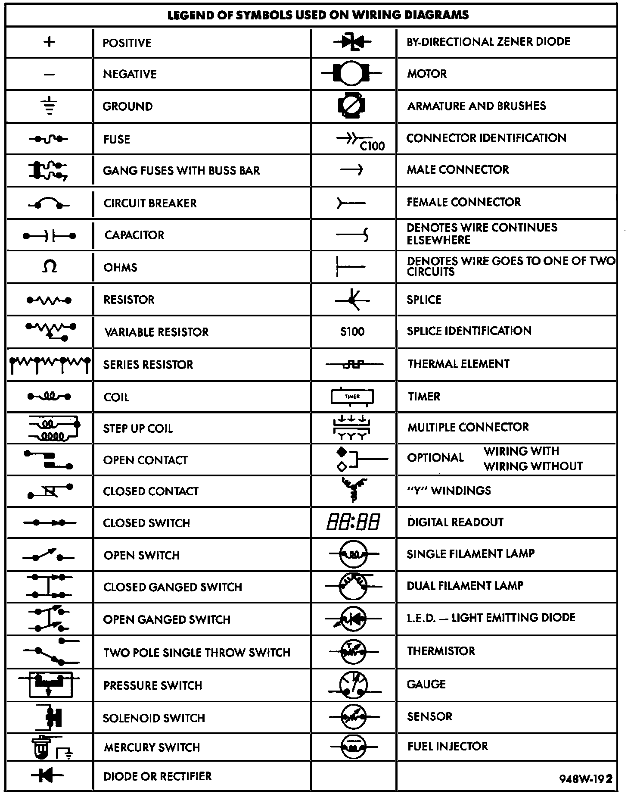

Operation CHARM
: Car repair manuals for everyone.
Русский
Home
>>
Jeep
>>
1997
>>
Grand Cherokee 4WD L6-4.0L VIN S
>>
Repair and Diagnosis
>>
Instrument Panel, Gauges and Warning Indicators
>>
Temperature Warning Lamp/Indicator
>>
Diagrams
>>
Diagram Information and Instructions
>>
How to Use Complete Body and Chassis Diagrams
>>
Symbols
Symbols
Symbol Identification:

Various symbols are used throughout the Wiring Diagrams group. These symbols can be identified by referring to the Symbol Identification chart.